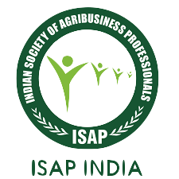

INDIAN SOCIETY OF AGRIBUSINESS PROFESSIONALS

Indian Society of Agribusiness Professionals (ISAP) since 2001 is working for the empowerment of rural India through sustainable farm and non-farm livelihood development.
Their mission is to enhance livelihood opportunities and thereby result in better quality of life for rural communities through sustainable intensification of Agriculture, Skill Development and Market Integration.
Invalid Userid & Password, please try again.
Login